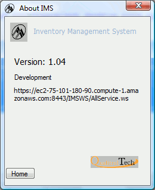

Default is development. If setting is production, the background
color is light pink.
Default is production. If setting is development, the background
color is light yellow.
On home screen, click on the RMBC icon, .
